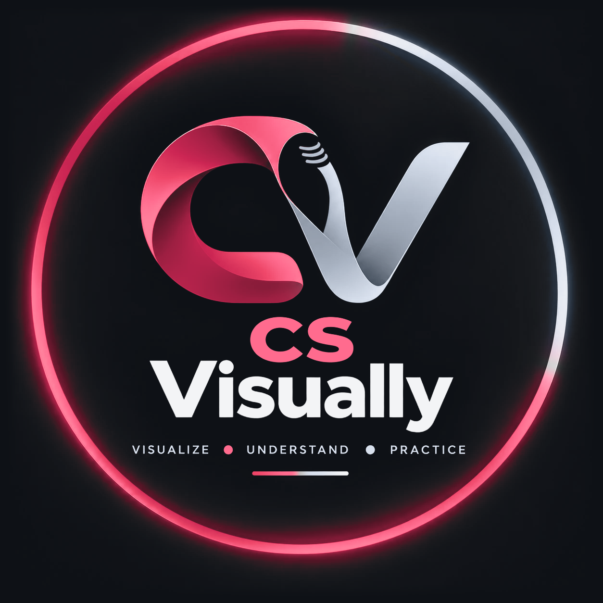

30
AI foundations
AI, machine learning, Generative AI, and familiar CS examples.
5 days · hands-on · built for CS students
From AI Users to AI Creators
Generative AI WorkshopBala Hari
Founder, CS Visually / GenAI Consultant, Thoughtworks
Ex-PayPal · Ex-Comcast · 5+ years in software engineering, data and AI
Building real-world AI systems. Helping students become AI-ready.

Opening: “Vanakkam everyone! Naan Bala Hari. CS Visually-oda founder; Thoughtworks-la GenAI consultant-aa work panren. Software engineering, data, AI indha areas-la 5 years-ku mela experience irukku. PayPal, Comcast-layum work pannirukken.”
“Indha five days-la AI-kitta questions kekkaradhu mattum illa; AI-ai thoughtful-aa use pannavum, adhu solradha verify pannavum, namma own practical solutions create pannavum learn pannaporom. AI expert-aa inga vara vendiya avasiyam illa—curiosity irundha podhum.”
Ask the room: “Ungalukku AI edhavadhu build panna, illa purinjikka help pannumna, neenga enna try panna virumbuveenga?” Konjam responses varattum; answer panna comfortable illa na pass pannalam-nu sollunga.
Day 01 / B.Sc. Computer Science
From understanding how it works to using it thoughtfully in your CS learning.
“Innikki namma Generative AI-oda basics paaka porom. AI pathi munnaadi therinjirukkanum, illa specific tool use pannirukkanum-nu expectation illa. CS concepts therinja helpful, aana beginner-aa irundhaalum easy-aa follow pannalaam.”
“Indha session-la oru simple habit follow pannuvom: observe, try, verify. AI answer kuduthaa appadiye accept pannama, adhu useful-aa irukka, correct-aa irukka-nu check pannuvom.” Students-ai, “Yaaravadhu AI tool try pannirukkeengala?” nu casual-aa kelunga; hands-up panna comfortable illa na pass pannalaam-nu sollunga.
Our route today
AI, machine learning, Generative AI, and familiar CS examples.
Models, tokens, training, and why plausible output can be wrong.
Tool exploration, multimodal examples, and a team challenge.
225 minutes of learning + 15-minute break
“Namma schedule romba simple. First 30 minutes AI, Machine Learning, Generative AI basics. Adutha 45 minutes-la, 15 minutes concept paathuttu, 30 minutes demo-la try panni verify pannuvom. Break-kku appuram tools explore pannuvom; text mattum illa, code, image, audio maadhiri examples-um paapom. Kadaisila team challenge.”
“Technical words ellam memorize pannanum-nu illa. Oru AI output-ai eppadi question pannanum, eppadi check pannanum-nu purinjikradhu dhaan mukkiyam.”
01 / Core vocabulary
Methods that enable computers to perform tasks associated with perception, prediction, language, or decision support.
A family of methods that learn patterns from data to make predictions or decisions.
Models that generate new content—such as text, images, audio, or code—in response to input.
Useful distinction: many AI systems classify or predict; generative systems produce content.
“AI-nu sonna adhu oru broad field. Andha field-kulla Machine Learning irukku; Machine Learning methods use pannra systems data-la irundhu patterns learn pannalaam. Generative AI-um indha AI landscape-oda oru part; adhu text, image, code maadhiri pudhu output generate pannum.”
“Indha categories ellam separate boxes maadhiri strict-aa nenachikka vendam. Generative AI model-um Machine Learning methods use pannalaam; aana ella AI system-um content generate pannaadhu.” Students-kitta examples kelunga: “Spam filter endha type? Text draft panra assistant endha type?”
Computer science connections
Ask for another explanation of recursion, data structures, or networking.
Draft pseudocode, documentation, test ideas, or a small code example.
Share a minimal error example and ask for hypotheses to investigate.
Compare software, data, AI, cybersecurity, and research career paths.
“CS student-aa irukkumbodhu, GenAI use panna neraya practical ways irukku. Recursion puriyala na innooru explanation kekkalaam; code write panna munnaadi pseudocode kekkalaam; bug vandhaa possible causes list panna sollalaam; tests-ku ideas kekkalaam.”
“Aana AI solliduchu-nu namma purinjittom-nu artham illa. Code run panni paakanum, tests pannanum, course rules follow pannanum. AI use pannina disclose panna sollirundhaa adhaiyum pannanum.” “Idhula edhu unga learning-ku useful-aa irukkum? Edhula konjam careful-aa irukkanum?” nu discuss pannunga.
02 / A simple mental model
Use learned patterns to produce a response that fits the prompt and context.
Truth, understanding, up-to-date facts, or successful execution of code.
“Language model eppadi text generate pannudhu-nu oru simple mental model paapom. Namma prompt-um, conversation context-um base panni, adutha text piece enna varalaam-nu model calculate pannitu, piece by piece response create pannum. Idhu oru simplified explanation; ellaa GenAI model-um idhe method dhaan use pannudhu-nu solla mudiyadhu.”
“Image, audio models input-ai process pannra way vera irukkalaam. Mukkiyama nyabagam vechukka vendiyadhu: response prompt-um context-um depend aagum. Adhu convincing-aa irundhaalum true-nu guarantee illa.”
A closer look / Tokens
Prompt + conversation + attached context all use the model’s available context.
“Model text-ai process pannumbodhu, words-ai appadiye mattum paakaama tokens-nu sollra chinna pieces-aa split pannum. Oru short word full token-aa irukkalaam; periya word parts-aa piriyalaam; punctuation-um token-aa varalaam. Exact split model-um language-um poruththu maarum.”
“Adhanaala one word equals one token-nu fixed rule illa. Context window-nu sonna, oru interaction-la model handle panna mudiyara information-oda limit. Romba periya document kuduthaa, ella details-um consider pannidum-nu assume panna koodadhu.”
A closer look / Training and use
Model parameters are adjusted using training data and a learning objective. The exact process varies by model.
The model processes the current input and generates an output. It does not automatically search the web or execute code unless connected tools are used.
Important: fluent output is not proof that the model retrieved a fact from a reliable source.
“Training time-la, model training data use panni parameters adjust pannum; patterns learn panna try pannum. Namma prompt kudukkumbodhu, adhu training-oda same process illa. Ippo irukkira prompt-um conversation context-um base panni response generate pannudhu.”
“Innum oru important point: chat assistant automatically internet search pannum, namma laptop files paakkum, code run pannum-nu artham illa. Sila tools-la browsing, file access, code execution features irukkum; adhu product settings-um access-um poruththu. Demo paakumbodhu feature available-aa-nu check pannuvom.”
03 / Limitations
A response may include unsupported or invented details, even when it sounds convincing.
Whether code compiles, tests pass, APIs exist, versions match, and explanations fit the source material.
Plausible ≠ verified
“Hallucination-nu sonna, AI unsupported-aa illa thappana information-ai confident-aa present pannradhu. Answer nalla fluent-aa irukkalaam; aana adhu correct-nu proof illa. Ambiguous prompt, missing context, outdated knowledge, faulty reasoning—pala reasons-naala answer thappa varalaam.”
“For example, code-ku oru library method kekkumbodhu, method name believable-aa irundhaalum actual-aa exist aagudha-nu official documentation-la verify pannanum. Citation, version number, code behavior—important matter-na check pannitu dhaan use pannanum.”
Quick demonstration
“Explain why this loop might skip the last item. Give one small example input.”
Trace the indexes, run a test, and compare the explanation with the actual code.
Never paste private credentials, personal records, or restricted course material into an unapproved tool.
“Ippo oru chinna, harmless code example eduthu AI-kitta explain panna sollalaam. Output vandha odane nambidama, oru test case yosichu verify pannuvom. Unga private code, password, API key, personal data edhaiyum unapproved tool-la paste panna vendaam.”
Tool access illa na prepared response use pannunga. “Indha answer-la endha claim-ai test panna mudiyum? Official docs-la edhai check pannalaam?” nu students-kitta kelunga. Demo aim AI correct-nu prove pannradhu illa; namma output-ai eppadi verify pannalaam-nu kaatturadhu.
Guided exploration / 60 minutes
Explain a CS concept at two levels of difficulty.
Draft a short, clearly labeled pseudocode example.
Ask for test cases for a simple algorithm; inspect them yourself.
“Ippo neenga individual-aa illa pair-aa oru simple task choose pannunga: concept explain panna sollalaam, pseudocode draft panna sollalaam, illa toy algorithm-ku test cases kekkalaam. Answer-ai notes, documentation, illa small test use panni check pannunga. Mudinja oru strength, oru limitation note pannunga.”
Specific account, paid feature, file upload edhuvum mandatory illa. Tool access illa na screen-la kaattura example-ai review pannalaam, illa printed activity sheet use pannalaam. External tool use panna college policy follow pannunga.
Beyond text / Multimodal GenAI
Generate or describe visual content; inspect for errors and stereotypes.
Transcribe, summarize, or generate speech where supported.
Draft examples or outlines; review accuracy, accessibility, and attribution.
Demonstrate only with approved tools and non-sensitive inputs
“Text mattum illaama, sila AI tools images, audio, code, slides-oda work pannum. Oru concept diagram generate pannina, labels-um arrows-um technically correct-aa irukka check pannanum. Audio summary irundhaa, source material-oda compare pannunga. Coding assistant suggestion kuduthaa, run panni test pannanum.”
Indha features product-um account-um poruththu maarum; innikki confirm pannina tools mattum demo pannunga. Ovvoru example-kku appuram, “Tool enna pannuchu? Enna thappa irukkalaam? Use panna munnaadi edhai verify pannanum?” nu students-kitta kelunga.
Responsible use
Keep personal, confidential, credential, and restricted data out of unapproved tools.
Check important facts, citations, code, calculations, and generated media.
Follow course rules and disclose AI assistance when required.
“AI use pannumbodhu moonu basic habit nyabagam vechukkonga. First, protect—password, private data, restricted course material unapproved tool-la share panna koodadhu. Second, verify—important facts, code, citations check pannanum. Third, transparent-aa irunga—college rules enna solradho adha follow panni AI help use pannirundhaa disclose pannunga.”
“Oru extra safety habit unga experience-la irundhu yaaravadhu add panna virumbureengala?” Tool privacy policies-um college rules-um same illa; approved systems use pannunga. Submit panra work-ku final responsibility nammadhu dhaan.
Team challenge / 45 minutes
Success means: a useful result, a checkable verification step, and an honest limitation.
“Ippo team-aa oru challenge choose pannunga: beginner-kku algorithm explain pannradhu, toy function-ku test cases create pannradhu, illa public CS topic-ai summarize pannradhu. Public illa synthetic inputs mattum use pannunga.”
“Output fluent-aa irukka-nu mattum judge panna vendaam. Idhu yaarukkaaga? Endha claim-ai verify panna mudiyum? Answer useful-aa irukka enna evidence venum?” nu yosichu, unga process-ai prepare pannunga. Activity sheet-la task cards-um reflection questions-um irukku.
Share back
What saved effort or helped you understand?
Which statement or output did you verify?
What would you avoid sharing or submitting unchanged?
“Rendu moonu teams short-aa share pannalaam. Neenga enna prompt kudutheenga, AI enna answer pannuchu, adhai eppadi verify panneenga-nu sollunga. Answer correct-aa varala na adhuvum useful learning—enna assumption thappa pochu-nu share pannunga.”
Students tool output produce pannadhu mattum base panni judge panna vendaam. Avanga eppadi question pannanga, check pannanga, limitation identify pannanga-nu focus pannunga.
Takeaways
We will design clearer prompts for CS study, code explanation, debugging, and career preparation.
Be curious. Keep your judgment.
“Innikki namma AI, Machine Learning, Generative AI difference paathom; tokens, context limit, hallucination pathiyum discuss pannom. Oru AI answer-ai appadiye accept pannama, test panni/source-la verify pannanum-nu practice pannom.”
Exit ticket: “Innikki pudhusa therinjadhu enna? Innum unga mind-la irukkira question enna? AI use pannumbodhu follow panna pora oru rule enna?” Day1 activity sheet-um glossary-um point pannunga. “Naalaikku prompt-ai clear-aa design panni, CS learning-la eppadi use pannalaam-nu hands-on-aa paapom.”